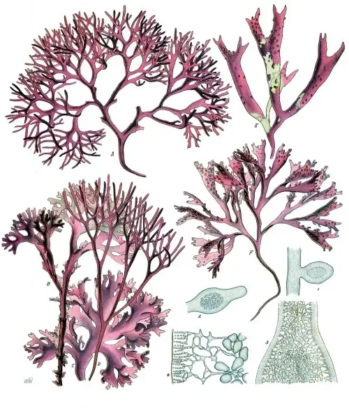

Carrageen moss
Carrageen moss is a wild green you can forage from April to August in Connacht, Munster and Ulster (Republic). Small, fan-shaped, dark red to purple seaweed tufts on low-tide rocks; bleaches to cream when dried.

When is carrageen moss in season in Ireland?
Carrageen moss is usually in season April to August. Timing shifts with weather, latitude and altitude.
Where does carrageen moss grow in Ireland?
Carrageen moss grows in Cavan, Clare, Cork, Donegal, Galway, Kerry, Leitrim, Limerick, Mayo, Monaghan, Roscommon, Sligo, Tipperary, Waterford. Regions: Connacht, Munster, Ulster (Republic).
How do you recognise carrageen moss?
Small, fan-shaped, dark red to purple seaweed tufts on low-tide rocks; bleaches to cream when dried.
How do you harvest carrageen moss?
Cut fronds at spring low tides, leaving the base, and bleach them by rinsing in rain and sun.
How do you eat carrageen moss?
Set into carrageen moss pudding with milk; thickens soups.
How do you store carrageen moss?
Dry and bleach in the sun.
What is carrageen moss good for?
Iron & calcium.
What can you cook with carrageen moss?
- Carrageen moss pudding: Soaked carrageen simmered in milk, strained and set into a soft vanilla pudding.